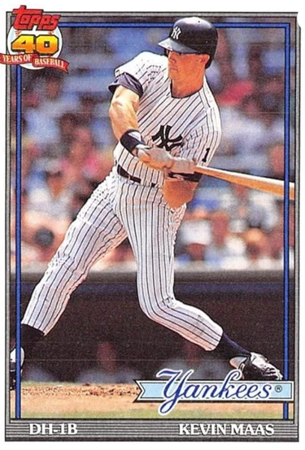

Kevin Maas
Career Highlights & Facts
(Facts are AI-generated and may require verification)
- Set a record for the fastest player to reach 10 home runs in a career at the time of arrival.
- Selected in the 22nd round of the amateur draft.
- Primary defensive position was first base.
Would you like to find out more about Kevin Maas?
Read Player Biography
Kevin Maas
January 4, 2012
/
in
BioProject - Person
/
by
admin
This bio is not assigned. Want to write a SABR bio? Contact
bioproject@sabr.org
.
Full Name
Kevin Christian Maas
Born
January 20, 1965 at Castro Valley, CA (US)
Stats
Baseball Reference
Retrosheet
Tags
None
Wikipedia Summary:
Kevin Christian Maas is an American former Major League Baseball player. Originally viewed as a top prospect for the New York Yankees he was unable to replicate the success of his rookie year and played for two major league ballclubs over five years.
Career Totals
| WAR | AB | H | HR | BA | R | RBI | SB | OBP | SLG | OPS | OPS+ |
|---|---|---|---|---|---|---|---|---|---|---|---|
| 1.5 | 1248 | 287 | 65 | .230 | 171 | 169 | 10 | .329 | .422 | .752 | 107 |
Statistics via Baseball-Reference.com
The Original Clue